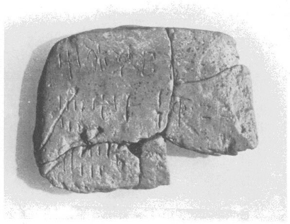
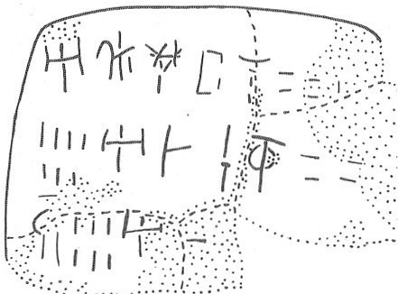

-
ARKH5
Names
Aliases for the inscription.
ARKH5, ARKH 5
Support
Type of Object.
Tablet
Location
Site where object was found.
Arkhalkhori
Findspot
Location at Site.
Unavailable


# "Row Index", "Line Index", "Word Index", "Syllabogram", "Status of Reading"
# R L W I S
# 1 0 1 PA certain
1 1 0 A certain
1 1 0 DU certain
1 1 0 NI certain
1 1 0 TA doubtful
1 1 0 NA certain
1 1 1 40 certain
1 1 1 1 certain
2 2 2 7 certain
2 3 3 A certain
2 3 3 DA certain
2 3 3 RO doubtful
2 3 4 GRA certain
2 3 5 40 certain
3 4 6 *131B doubtful
3 4 7 6 certain
3 5 8 A certain
Scribe
Writer of Inscription.
Unavailable
Context
Approximate Date of Inscription.
Late Minoan IB
1500-1450 BCE
Dimensions
Height x Length x Thickness.
Catalogue
Museum Reference Number.
HM 4674
Hiraklion Museum
Readings
Linear A Transcription
A Linear A transcription with words parsed separately.
Line breaks match the inscription.
𐘇𐘬𐘝𐘳𐘅𐄓𐄇
𐄍𐘇𐘀𐘁𐙉𐄓
𐙎𐄌𐘇
ASCII Transcription
An ASCII transcription with words parsed separately.
Line breaks match the inscription.
ADUNITANA401
7ADAROGRA40
*131B6A
Linear A Tabulation
A Linear A transcription with words parsed separately.
Line breaks are logical, e.g. to represent a list.
𐘇𐘬𐘝𐘳𐘅𐄓𐄇
𐄍
𐘇𐘀𐘁𐙉𐄓
𐙎𐄌
𐘇
ASCII Tabulation
An ASCII transcription with words parsed separately.
Line breaks are logical, e.g. to represent a list.
ADUNITANA401
7
ADAROGRA40
*131B6
A
Commentaries
ARKH 5
, page tablet (HM 1674) (GORILA III: 16-17) (Kapetanaki
Street, LM IB context)
|
side.line
|
statement
|
logogram
|
number
|
fraction
|
|
.1
|
A-DU-NI-
TA
-NA
|
|
41
[
|
|
|
.2
|
|
|
]
7
|
|
|
.2
|
A-DA-
RO
|
GRA
|
40
[
|
|
|
.3
|
|
VINb
|
6
|
|
|
.3
|
A-[
|
|
|
|
|
|
infra mutila
|
|
|
|
3: VINb over [[ ]], perhaps GRA.
all three names begin with A-
The similar amounts may not be
coincidental; since .1 has no logogram, it may count people, which
might imply similar amounts, people & VINb.
Commentary © John Younger
References
papers/GORILA-Vol3.pdf#page=41